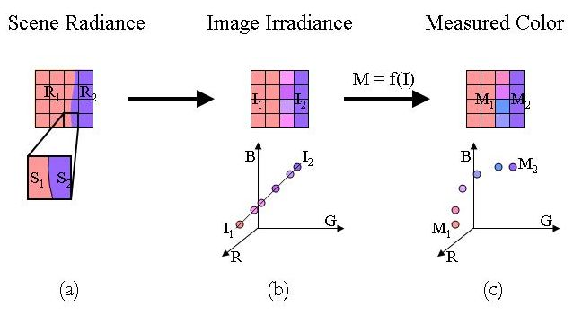
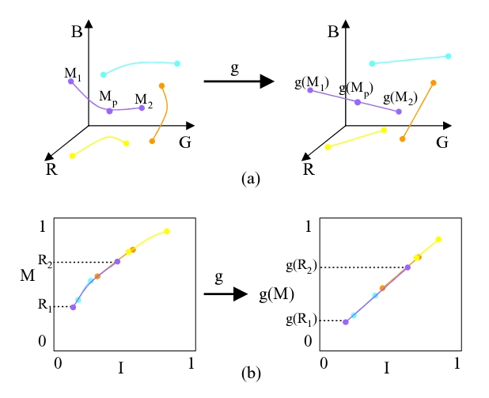

Radiometric Calibration from a Single Image
Stephen Lin,
Jinwei Gu,
Shuntaro Yamazaki
and Harry Shum
Abstract
Photometric methods in computer vision and graphics require
calibration of the camera's radiometric response. Previous works
have addressed this problem using multiple registered images captured
under different camera exposure settings. In many instances, such an
image set is not available. We propose a method that performs
radiometric calibration from only a single image, based on measured RGB
distributions at color edges. This technique automatically selects
appropriate edge information for processing, and employs a Bayesian
approach to compute the calibration. The optimal response curves are
selected by minimizing the nonlinearity (i.e., the sum of the distances
of the pixels on the edge patches to the straight line in RGB space)
and maximizing the probability in the prior space.
Experiments have shown that accurate calibration results can be
obtained using only a single input image, when the input images has
enough edge pixels that cover a large range of the intensity spectrum.
Publication
Stephen Lin, Jinwei Gu, Shuntaro Yamazaki, and Heung-Yeung Shum. "Radiometric Calibration from a
Single Image". in Proc. of IEEE Conference on Computer Vision and Pattern Recognition (CVPR2004), vol.2, pp.938-945, 2004.
Basic Idea
1. The image irradiances of the edge pixels are linear combinations of
the two image irradiance values of the two regions. After
sensored by the camera, the linearity will no longer be preserved
because of the nonlinear camera response.

2. This fact can be used to solve for the inverse response function
g that can best recover the linearity on the edge pixels, which only
requires one single image as the input.

Download
Several of the image sets we used in our experiments can be downloaded
here. The aperture to take these images is F8, the shutter speeds are:
1/30, 1/15, 1/8, 1/4, 1/2 (stops). The estimation results of
camera response for the duck example can be found here.
Related Work
Stephen Lin and Lei Zhang, "Determining the Radiometric
Response Function from a Single Grayscale Image", IEEE Conference on Computer Vision and Pattern Recognition 2005.
|
|